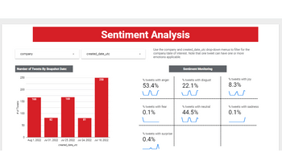
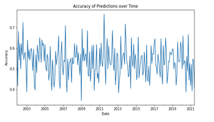
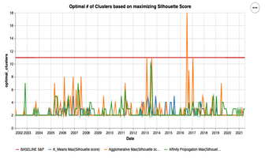
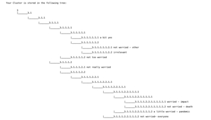
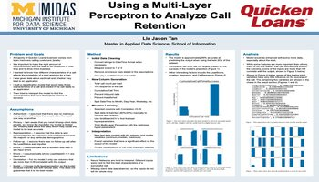
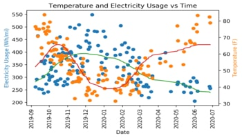

August 2022 - Present
Reconstructed a critical operational risk capital model from scratch, leveraging Python to replace a legacy implementation with 10k+ lines of clean, efficient code. Optimized natural language processing and machine learning models to enhance operational risk incident quality assurance, reducing manual review workload by over 50% and increasing data accuracy for risk event analysis. Led and coached 2 team members and 5 consultants by setting clear guidelines, managing timelines, and running daily standups, enabling the team to deliver mission-critical capital analytics solutions ahead of regulatory deadlines.
June 2021 – August 2021
Applied web scraping and API integration pipelines to collect and analyze large-scale public datasets, directly informing product development decisions, leading to significant user interface improvements. Conducted user interviews and qualitative research to identify critical insights, driving key management decisions and boosting customer satisfaction.

Developed a full-stack application for real-time sentiment and topic monitoring of company discussions. Utilized supervised and unsupervised learning techniques, including BERT for emotion classification (e.g., surprise, anger, disgust) and non-negative matrix factorization for topic clustering (e.g., account issues, ordering issues, service issues), to gain actionable insights from social media interactions.

Achieved 62% precision with a random forest classifier, a substantial improvement over the 20% precision of a dummy classifier. Successfully categorized stocks into top, middle, and bottom tiers using key equity metrics such as price-to-earnings ratio, dividend yield, and volatility.

Conducted a comprehensive analysis of S&P 500 stocks using k-means, agglomerative clustering, and affinity propagation to identify optimal stock groupings. Evaluated clustering methods based on Calinski-Harabasz, Davies-Bouldin, and Silhouette scores, leading to a refined unsupervised clustering model that revealed key sectoral insights.

Received first place by leveraging NLP techniques to analyze sentiment in text message surveys regarding COVID-19. Automated data cleaning, text encoding, and hierarchical clustering using BERT to improve the efficiency of research and generate deeper insights.

Performed predictive analysis on call data to optimize client contact frequency using a Multi-Layer Perceptron neural network. Employed GridSearchCV for hyperparameter tuning and conducted detailed model interpretation and evaluation.

Conducted comprehensive data analysis on Tesla vehicle performance, evaluating efficiency in relation to temperature, average speed, and driving smoothness. Utilized Python for data preprocessing, analysis, and visualization, and tracked battery degradation over time to identify patterns and trends.